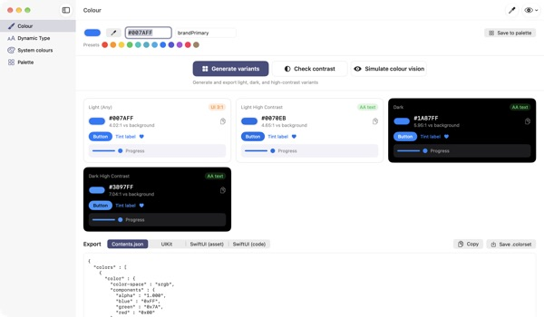
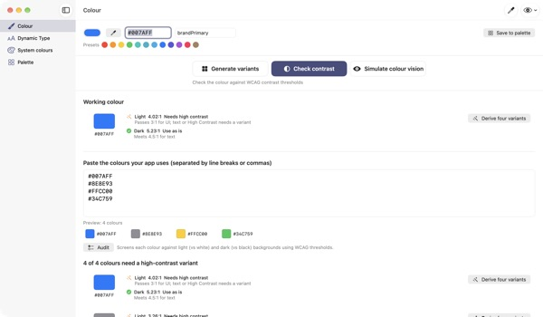
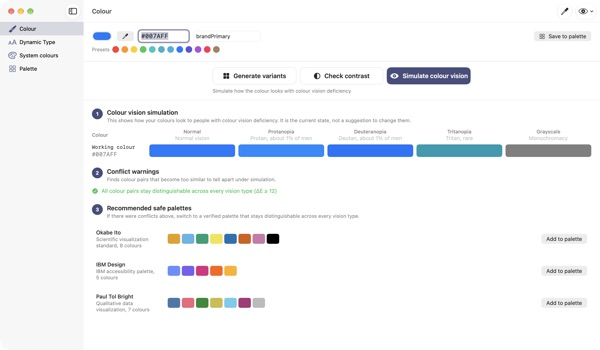
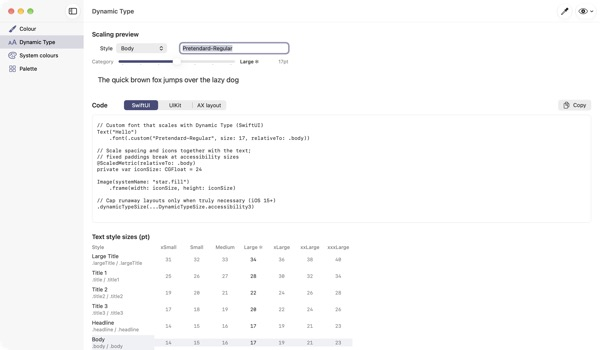

One colour in,
four appearances out
System colours adapt to Dark Mode and Increase Contrast on their own. Your brand colours don't. TetraTint takes one light-mode colour, builds Light, Light High Contrast, Dark and Dark High Contrast variants, and exports them straight to Xcode.
Every feature is free. Requires macOS 14 or later.

Try your brand colour
Paste a hex value or tap a preset. The same math as the app gives you all four variants and their contrast right away.
Ever watched your brand colour vanish in Dark Mode?
The blue you picked in light mode looks muddy on black, and for people with Increase Contrast on, the text barely reads. Hunting for a colour per appearance and checking each ratio by hand eats half a day. TetraTint derives variants the way system colours shift between appearances, and shows on the spot whether each one passes.
Audit every colour you already use
Paste your app's whole hex list and it sorts each colour: fine as is, needs a high-contrast variant, or decorative only.
One click turns a problem colour into four variants saved to your palette. It's a quick way to get ready for the Sufficient Contrast accessibility label on the App Store.

See it through colour-blind eyes
Preview your palette with protanopia, deuteranopia, tritanopia and greyscale, and get a warning for any pair that becomes too close to tell apart.
Pull in the Okabe–Ito, IBM or Paul Tol colour-blind safe palettes with one click, or use the eye button at the top right to preview the whole app that way.

Custom fonts that follow text size
See all 11 text styles across 7 size categories, and drag a slider to preview real sizes.
Enter your font's PostScript name and get UIKit, SwiftUI and @ScaledMetric code, plus code that switches layout at large sizes.

Three steps to start
- 1
Add a base colour
Paste a hex, sample one anywhere on screen with the eyedropper, or pick a preset.
- 2
Check the four variants
Read the contrast badges and fine-tune any variant that's off-brand.
- 3
Export to Xcode
Copy or save as Contents.json, a .colorset, or UIKit and SwiftUI code.
How variants are made, and what the badges mean
- Light (Any)
- Your colour as entered
- Light High Contrast
- Slightly more saturated, darkened until it clears 4.5:1 on white
- Dark
- A little brighter and more vivid (lightness +5, saturation +3)
- Dark High Contrast
- Brightened until it clears 7:1 on black
- AA text
- 4.5:1 or more against the background, fine for body text
- UI 3:1
- 3:1 or more, fine for buttons and icons but not for text
- Low
- Below 3:1, don't use for text, icons or status
- Export
- Contents.json · .colorset · UIKit · SwiftUI, or the whole palette as one .xcassets
System colour reference values come from Apple's Human Interface Guidelines and may change with OS updates. In your shipping app, use the system colour APIs.
Questions
Is it really free?
Yes. Every feature is free, with no account and no ads. If it helped, you can leave a tip in Settings; it doesn't unlock anything.
The generated variants don't match my brand.
Adjust any variant with the colour picker on its card. Regenerate all throws away your manual edits and derives everything again from the base colour.
How are the variants calculated?
They follow how Apple's system colours actually shift between appearances: a little brighter and more vivid in Dark, at least 4.5:1 on white for Light High Contrast, and at least 7:1 on black for Dark High Contrast.
What does a colour vision warning mean?
Under that simulation, two colours fall below a difference of ΔE 12 and become hard to tell apart. Don't rely on colour alone: add icons, patterns or labels, or switch to a safe palette.
How do I make a custom font support Dynamic Type?
In Dynamic Type, enter the font's PostScript name and pick a style to get UIKit, SwiftUI and @ScaledMetric code. At accessibility sizes Body grows to over three times its default, so avoid fixed heights and lineLimit(1).
Exported colours look different from the system colours in my app.
System colour reference values come from the Human Interface Guidelines and can change between OS releases. Always use the UIColor or Color API for system colours.
Where is my saved palette stored?
Only on your Mac. Nothing is synced to the cloud or sent anywhere. See the privacy policy for details.
Is a colour I sample with the eyedropper saved?
No. It reads only the colour value at the point you pick and uses it as the working colour. No screen image is saved or sent.
Which Macs does it run on?
macOS 14 (Sonoma) or later. When you export, you choose where the files are saved.
Bug reports, feature ideas or questions? Write to leeo@kakao.com. We usually reply within 2–3 days.